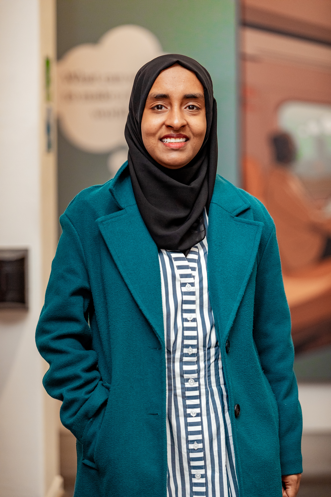

Fatma Noor Kassim
MSc Data Science at LSE, previously four years in strategy consulting at BCG. I work on machine learning, statistical modelling, and data-driven strategy.
Currently finishing my MSc and open to Strategy & Operations and data science roles. The best way to reach me is the contact form.
Download CV
About
I spent four years at BCG working across healthcare, fintech, and development, from due diligence and market sizing to strategy for governments and foundations. I'm now doing an MSc in Data Science at LSE, building the technical depth to move from framing problems to solving them with data. My recent work spans high-dimensional feature selection, distributed computing, and an AI-for-good project at Oxford.
Education
London School of Economics and Political Science — MSc Data Science (2025 to 2026). Coursework: Distributed Computing for Big Data, Machine Learning and Data Mining, Multivariate Methods. University of Nairobi — BSc Economics and Statistics, First Class Honours (2016 to 2020). Graduated top of the Faculty of Arts and Social Sciences. Awarded five university prizes, including the Gandhi Smarak Nidhi Trustee Fund (best final-year student in the faculty), the UoN Alumni Association Prize (best overall student in the faculty), and the Prof. Jane Kabubo Mariara Award for Economics and Statistics.